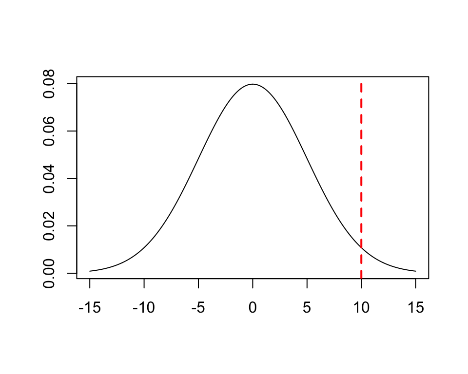
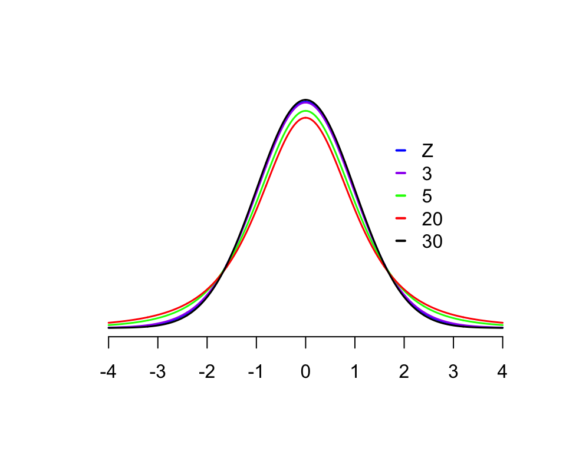
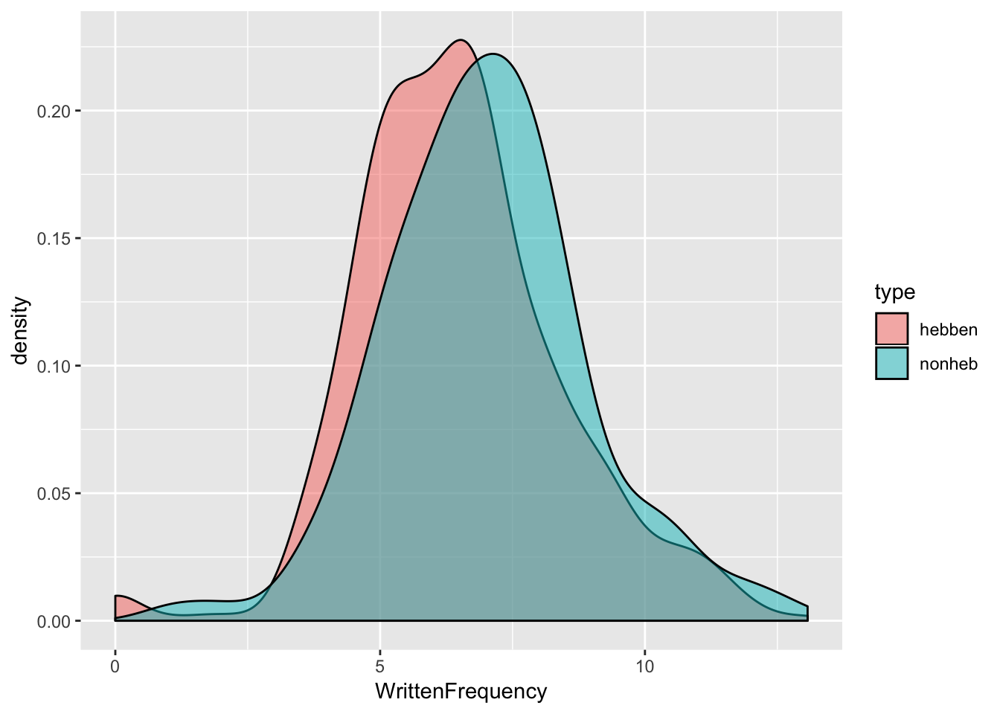

Chapter 2 Hypothesis testing
Preliminary code
This code is needed to make other code below work:
library(gridExtra) # for grid.arrange() to print plots side-by-side
library(languageR)
library(ggplot2)
library(dplyr)
## loads transitions.txt from OSF project for Roberts, Torreira, & Levinson (2015) data
transitions <- read.delim(url("https://osf.io/4v8r7/download"))In this chapter we will introduce:
hypothesis testing, at a high level,
\(t\) tests, the most commonly-used hypothesis test, in some detail;
other hypothesis tests, including non-parametric tests;
and some necessary adjacent concepts, such as \(Z\)-scores.
2.1 Hypothesis testing: High-level
Based on a sample of \(n\) observations, we can compute the:
sample mean (\(\bar{x}\))
and the standard error (\(SE\) = \(\frac{\sigma}{\sqrt{n}}\))
concepts introduced in the previous chapter. The sample mean is normally distributed (by the central limit theorem), so \(\mu \pm 2\frac{\sigma}{\sqrt{n}}\) contains approximately 95% of the probability mass.
For concreteness, say we find that \(\bar{x}\) is 10 and SE = 5.
We don’t know the population mean \(\mu\), but suppose we have a hypothesis about it that is meaningful: say \(\mu = 0\), which could mean “there is no effect” (of whatever we’re measuring).
If we knew the population standard deviation \(\sigma\), we could answer the question: “is the sample mean far enough away from 0 to be 95% sure that \(\mu \neq 0\)?”
However, we don’t know \(\sigma\). Instead, we can approximate it by using the \(SE\) of the sample (see here). Then we can calculate the probability distribution of values the sample mean could take on, given \(\mu = 0\), and given some uncertainty in using \(SE\)—and use this distribution to answer our question. This procedure is called hypothesis testing.
Example
Suppose that for some sample:
Sample mean = 10
SE = 5
Hypothesized \(\mu\) = 0.
In this example, we are assuming that we (magically) know the the true value of the standard error (using \(\sigma\)).
This plot shows how far out the sample mean (10) lies, for a normal distribution with mean 0 and standard deviation 5:

We would like to be able to answer: is the sample mean far enough away from \(\mu\) to be 95% sure that \(\mu\) isn’t 0?
2.2 \(z\)-scores
A z-score measures how many standard deviations an observation \(x_i\) is from the mean:
\[\begin{equation*} z_i = \frac{x_i - \mu}{\sigma} \end{equation*}\]If the observations are normally distributed, the \(z_i\) values are normally distributed as well, with mean 0 and standard deviation 1. (Note that \(\mu\) and \(\sigma\) here are the population parameters.)
When you draw from any random variable \(z\) with a normal distribution:
The probability of a value with \(|z| > 1.96\) is 0.05
Probability of a value with \(|z| > 2\) is 0.04
Probability of a value with \(|z| > 3\) is 0.002
Example
Returning to the question posed in our example above: “Is the sample mean far enough away from \(\mu\) to be 95% sure that \(\mu\) isn’t 0?”
The sample mean has standard deviation = SE. Thus, a \(z\) score for the sample mean we’ve computed is (sample mean - 0)/SE :
\(z = (10-0)/5 = 2\)
Thus, the probability of observing a sample mean at least this far from 0 is 0.04. The letter \(p\) (the significance) is conventionally used for “the probability of observing a value at least this big” in hypothesis testing, and written \(p = 0.04\).
In this informal example, we assumed that we somehow knew SE—the population standard deviation—but this isn’t usually the case.
2.3 \(t\)-tests
2.3.1 Single-sample \(t\)-test: Setup
In the setting for a (single-sample) \(t\)-test, we assume that we have \(n\) observations of some normally distributed random variable, such as log-transformed reaction times (english dataset) or duration of vowels (tapping dataset). In reality the random variable has some mean and standard deviation \(\mu\) and \(\sigma\), population values that we don’t know.
Our question is: is the mean of the variable (\(\mu\)) different from some constant \(\mu_0\) (usually 0)?
To test this, as in the informal example above, we would like to calculate a \(z\) score:\[\begin{equation*} z = \frac{\bar{x}-\mu_0}{\sigma/\sqrt{n}} \end{equation*}\] However, we typically do not know the population standard deviation \(\sigma\), so we estimate it using the sample standard deviation: \[\begin{equation} s = \sqrt{\frac{\sum^n_{i = 1} \left(x_i - \bar{x}\right)^2}{n - 1}} \tag{2.1} \end{equation}\] The \(t\)-statistic is: \[\begin{equation*} t = \frac{\bar{x}-\mu_0}{s/\sqrt{n}} \end{equation*}\]
which is an estimate of the \(z\)-score that can be calculated just using the data in the sample.
The \(z\)-score and \(t\)-statistic are random variables:
The \(z\)-score follows an \(N(0,1)\) distribution (normal distribution with mean 0, standard deviation 1).
The \(t\)-statistic follows the \(t\)-distribution with \(n - 1\) degrees of freedom.
This plot shows the \(t\) distribution for several different degrees of freedom values, as well as the standard normal distribution (\(Z\)):

Note that the \(t\) distributions have “fatter tails” than the normal distribution. (Why, intuitively?)
\(t\) in this case is the test statistic—a value we compute based on the sample, which we will then evaluate using a hypothesis test evaluating two options:
The null hypothesis is \(H_0~:~\mu=\mu_0\)
The alternative hypothesis is \(H_a~:~\mu\neq\mu_0\)
That is: the population mean is either the “null value” (usually 0), or it isn’t.
The logic of hypothesis testing, in this case:3
If \(H_0\) were true (“under the null hypothesis”), \(t\) would follow a \(t_{n-1}\) distribution.
Calculate how likely we are to get a value of \(t\) at least as extreme as the value we observed, using the \(t\)-distribution. This is \(p\), or the \(p\)-value.
If \(p\) is less than the significance level \(\alpha\) we reject the null hypothesis.
\(\alpha\) is a number between 0 and 1 parametrizing how certain we have to be to reject the null. Usually \(\alpha\) is taken to be 0.05 (95% certain), but this is just convention.
Note that “at least this extreme” refers to a two-tailed significance test, which is by far the most commonly-used in practice. (For example, the default for R’s t.test is a two-tailed test.)
It is also possible to carry out a one-tailed significance test, which asks: “How likely is a value at least this positive of the test statistic?” (Or “at least this negative.”) The Wikipedia page on one/two-tailed tests has a good visualization of the one-tailed test.
Among the reasons two-tailed significance tests are the default:
They are “more conservative”: \(p\) values will be higher, making it less likely to reject the null hypothesis in a case where it is actually true (a “Type I error”).
They do not require you to choose a direction (“positive” or “negative” above) to apply a one-sided test, instead remaining agnostic on the direction of any observed effect.
Classic textbooks at this point run through examples of calculating \(t\) statistics and carrying out \(t\) tests by hand, using tables to calculate \(p\) for a given sample. This is a bit of a contrived exercise in 2018, when \(t\)-tests can just be carried out automatically (even in Excel). But it remains very important to have a good conceptual understanding of how \(t\)-statistics and \(t\)-tests work (as well as the easier case of \(z\)-statistics and \(z\) tests), because the underlying concepts are fundamental to most statistical methods used in current practice in language sciences (e.g. any regression model).
2.3.2 Hypothesis testing in general
More generally, (null-significance) hypothesis testing follows these steps:
Choose a significance level, \(\alpha\)
Formulate a null hypothesis, \(H_0\)
Formulate an alternative hypothesis, \(H_a\)
Gather data, calculate a test statistic, \(T\)
Determine the probability of obtaining \(T\) “or a more extreme value” under \(H_0\), the \(p\)-value
If \(p \leq \alpha\), reject \(H_0\)
This procedure underlies most inferential statistics used in language sciences—\(t\)-tests, ANOVAs, linear regressions, mixed-effects regressions—though the steps are not usually explicitly stated.
In particular, it is often assumed that:
\(\alpha=0.05\)
The null hypothesis is “no difference” or “parameter is zero”
A two-tailed test is used
unless stated otherwise. The reader of a paper or book (including this one) often must infer from context which test is being used: the type of data being analyzed and the results that are shown. For example, a comparison of two groups where \(t\), d.f., \(p\) are reported probably means a two-sided \(t\) test was used.4
Example: One-sample \(t\)-test
For this example we use a new dataset: the Dutch verb regularity data (regularity) from the languageR package, described here. This dataset lists 700 Dutch irregular and regular verbs (the column Regularity), and includes variables which may help predict whether a verb is regular or not, including:
What
Auxiliaryis used to form certain past/passive tenses (hebben, zijn, zijnheb)The verb’s frequency (
WrittenFrequency)
The mean (log) frequency for hebben verbs (those where the auxiliary “hebben” is used) is:
d <- regularity %>% filter(Auxiliary == "hebben")
mean(d$WrittenFrequency)## [1] 6.494323Suppose for this example that we knew that this is the true mean—the population value.
For other verbs:
Auxiliary= zijn (those where the auxiliary “zijn” is used): mean frequency isd <- regularity %>% filter(Auxiliary == "zijn") mean(d$WrittenFrequency)## [1] 7.737747Auxiliary= zijnheb (those where either “zijn” or “hebben” can be used as auxiliaries): mean frequency isd <- regularity %>% filter(Auxiliary == "zijnheb") mean(d$WrittenFrequency)## [1] 6.857975
These mean values suggest that both zijn and zijnheb verbs have higher frequency on average than hebben verbs—with zijn verbs having the highest frequency—but we need to conduct hypothesis tests to conclude that these differences are statistically significant.
First, let’s test whether zijn verbs have significantly different frequency from hebben verbs (with \(\alpha = 0.05\)). In this case the null hypothesis is “zijn verbs have mean frequency = 6.494”, and we carry out a one-sample \(t\)-test (two-sided):
d <- regularity %>% filter(Auxiliary == "zijn")
t.test(d$WrittenFrequency, mu = 6.494)##
## One Sample t-test
##
## data: d$WrittenFrequency
## t = 2.1317, df = 19, p-value = 0.04631
## alternative hypothesis: true mean is not equal to 6.494
## 95 percent confidence interval:
## 6.516539 8.958954
## sample estimates:
## mean of x
## 7.737747Which suggests we can reject the null hypothesis (\(p = 0.046\)): zijn verbs have different frequencies from hebben verbs.5
To do the same test for zijnheb verbs:
d <- regularity %>% filter(Auxiliary == "zijnheb")
t.test(d$WrittenFrequency, mu = 6.494)##
## One Sample t-test
##
## data: d$WrittenFrequency
## t = 2.1505, df = 102, p-value = 0.03388
## alternative hypothesis: true mean is not equal to 6.494
## 95 percent confidence interval:
## 6.522260 7.193689
## sample estimates:
## mean of x
## 6.857975Which suggests that zijnheb verbs have different frequencies from hebben verbs (\(p=0.034\)).
Note that the \(p\) value is higher for the zijn/hebben comparison (less confident we can reject the null hypothesis) than for the zijn/zijnheb comparison, even though the difference in sample means is larger for zijn/hebben—as shown in the boxplot below.
ggplot(regularity, aes(x=Auxiliary, y=WrittenFrequency)) +
geom_boxplot() +
geom_point(position="jitter", size=0.75, alpha=0.25)
Question:
Why is this?
2.3.3 Two-sample \(t\)-test
The one-sample \(t\)-test is mostly used as part of more complex statistical procedures (such as linear regression). More commonly used on its own is the two-sample \(t\)-test, to examine the difference in means between two groups.
As an example, for the regularity data, let’s divide the data up into two “types”, by whether the Auxiliary is hebben or not:6
regularity <- mutate(regularity, type=factor(ifelse(Auxiliary %in% c("zijn", "zijnheb"),"nonheb", "hebben")))The two verb classes seem to have similar frequencies:
ggplot(aes(x=WrittenFrequency), data=regularity) + geom_density(aes(fill=type), alpha=0.5)
but hebben verbs may have lower frequencies on average. A two-sample \(t\)-test lets us test whether this difference is significant.
2.3.3.1 Setup
The two-sample \(t\)-test assumes two independent samples, each drawn from a normal distribution with the same standard deviation:
Sample 1: \(n_1\) observations (\(x^1_1, \ldots, x^{n_1}_1\)) from \(N(\mu_1, \sigma)\)
Sample 2: \(n_2\) observations (\(x^1_2, \ldots, x^{n_2}_2\))from \(N(\mu_2, \sigma)\)
(This part can be skipped if math is not useful for your understanding.)
The sample means are the averages of the observations in each sample: \[ \bar{x}_1 = \frac{\sum_{i=1}^{n_1} x^i_1}{n_1}, \quad \bar{x}_2 \frac{\sum_{i=1}^{n_2} x^i_2}{n_2} \]
and the difference in sample means is normally distributed (because \(\bar{x}_1\) and \(\bar{x}_2\) are). Recall that we want to calculate \(Z\): the difference in sample means divided by its standard deviation. If we knew the standard deviation \(\sigma\), the variance of the difference in sample means would be \(\sigma^2/n_1 + \sigma^2/n_2\), and so \[ Z = \frac{\bar{x}_1-\bar{x}_2}{\sigma\sqrt{(1/n_1 + 1/n_2)}} \]
As for the one-sample \(t\)-test, we don’t know \(\sigma\) and must estimate it from the data in the two samples. The sample standard deviations \(s_1\) and \(s_2\) are calculated as in Equation (2.1). Since we are assuming the two samples have equal variance, we calculate a single sample standard deviation \(s\): \[ s = \sqrt{\frac{(n_1-1) s_1^2 + (n_2-1) s_2^2}{n_1+n_2-2}} \] That is, we are estimating the variance \(s^2\) as the average of the two sample variances \(s_1^2\) and \(s_2^2\), weighted by their degrees of freedom—this turns out to be an unbiased estimator of \(\sigma\).
The test statistic \(t\) corresponding to the difference in sample means is then: \[\begin{equation} t = \frac{\bar{x}_1-\bar{x}_2}{s\sqrt{(1/n_1 + 1/n_2)}} \tag{2.2} \end{equation}\]which turns out to follow a \(t\) distribution with \(n_1 + n_2 - 2\) degrees of freedom.
To carry out the two-sample hypothesis test:
Null hypothesis: * \(H_0 ~:~ \mu_1 - \mu_2 = 0\) (equal means)
\(H_a ~:~ \mu_1 - \mu_2 \neq 0\)) (means are not equal)
Choose \(\alpha\)
Compute \(t\)
Compute \(p\)-value by seeing how far out \(t\) is on a \(t_{n_1 + n_2 - 2}\) distribution.
(And also calculate (1-\(\alpha\))% confidence intervals for the difference in means, if desired.)
As an aside: it is worth noting that there is more uncertainty when estimating the difference between the means of the two samples (\(\bar{x}_1\) and \(\bar{x}_2\))—the denominator of Equation (2.2)—than when estimating either of these values alone.7 This illustrates a very general fact: the more things are being estimated to determine a quantity \(X\), the more uncertainty there is in our estimate of \(X\).
Example
To test whether the difference seen in the plot above is significant, we carry out a two-sample \(t\)-test of whether hebben and non-hebben verbs differ in frequency, assuming equal variances in each group:
t.test(regularity$WrittenFrequency ~ regularity$type, var.equal = TRUE)##
## Two Sample t-test
##
## data: regularity$WrittenFrequency by regularity$type
## t = -2.6406, df = 698, p-value = 0.008462
## alternative hypothesis: true difference in means is not equal to 0
## 95 percent confidence interval:
## -0.8834591 -0.1299488
## sample estimates:
## mean in group hebben mean in group nonheb
## 6.494323 7.001027suggesting that hebben and zijn/zijnheb verbs have significantly different frequencies.
2.3.4 Unequal variances: Welch \(t\)-test
When testing whether two samples differ there is not usually any reason to think that the samples have equal variances. In practice one should assume by default that the samples have unequal variances—as R does in the t.test function.
This default is the Welch \(t\)-test, which corrects the degrees of freedom and SE calculations for unequal variances. (The formulas get complicated, which is why it is useful for exposition to assume equal variances.) To run the same \(t\)-test as above without assuming equal variances:
t.test(regularity$WrittenFrequency ~ regularity$type)##
## Welch Two Sample t-test
##
## data: regularity$WrittenFrequency by regularity$type
## t = -2.6688, df = 179.82, p-value = 0.008309
## alternative hypothesis: true difference in means is not equal to 0
## 95 percent confidence interval:
## -0.8813494 -0.1320584
## sample estimates:
## mean in group hebben mean in group nonheb
## 6.494323 7.001027(Note the Welch Two Sample t-test message prior to the results.)
This variant of the \(t\)-test—two-sample, unequal variances—is by far the most commonly used in practice, and is often just called “a \(t\)-test” in papers.
2.3.5 Assumptions behind \(t\)-test
There are two key assumptions made by \(t\)-tests (here we assume two-sample):
Normality: Both groups are normally distributed
Independence: Each observation is independently sampled
It is important to be aware of these assumptions—especially the second one, which is not the case for many very basic questions addressable with linguistic datasets.8
It is less clear how important the normality assumption is. If your samples are clearly not normally distributed—either by visual inspection , or for a priori reasons (e.g. a rating task—can’t be normally distributed because of upper and lower bounds), you should use a non-parametric test instead (like Wilcoxson, discussed below). A common case in practice where \(t\) tests are suspect is when there are clear outliers in one or both samples. However, \(t\)-tests are relatively “robust”9 to non-normally-distributed samples, and many papers especially in older literature report \(t\)-tests on (probably) non-normal observation distributions, in part because carrying out non-parametric tests was computationally difficult before the 1990s. One shouldn’t immediately discount the results of \(t\)-tests for the many types of linguistic data where normality is unlikely (like Likert scores, reaction times, durations of sounds/words), but do view these results critically—especially where significances are near the \(\alpha\) cutoff.
2.3.6 Paired \(t\)-test
A useful variant of the \(t\)-test, which deals with a particular violation of the independence assumption, is for paired data, where the two samples consist of pairs of observations (A and B), and the difference between A and B is of interest.
For example:
For the
tappingdata: “tapping rate in intransitive items” and “tapping rate in transitive items” for the \(i\)th participant.- Can be used to ask: “does tapping rate differ by-participant between transitive and intransitive items?”
For the
transitionsdata:“Mean transition duration during the first minute”“, and”mean transition duration after the first minute“, for each conversation
Can be used to ask: “do floor transition times differ between the first minute of a conversation and the rest of the conversation?”"
The paired \(t\)-test, essentially a one-sample \(t\)-test on pairwise differences between observations, is appropriate for this type of data.
Example
For the transitions example just given, we first set up a dataframe with three columns:
Conversation id
Mean transition duration during the first minute (= 60000 msec)
Mean transition duration after the first minute
d <- transitions %>%
group_by(file) %>%
summarise(meanDurFirst = mean(dur[time < 60000]),
meanDurAfter = mean(dur[time > 60000]))
d## # A tibble: 349 x 3
## file meanDurFirst meanDurAfter
## <fct> <dbl> <dbl>
## 1 sw3154.eaf 231. 245.
## 2 sw3155.eaf 19 153.
## 3 sw3156.eaf 131 -9.11
## 4 sw3159.eaf 166. -28.3
## 5 sw3161.eaf -352. 34.3
## 6 sw3168.eaf 31.7 120.
## 7 sw3169.eaf NaN 202.
## 8 sw3171.eaf -76.8 -120.
## 9 sw3174.eaf 378. 75.7
## 10 sw3182.eaf 330. 139.
## # ... with 339 more rowsTest whether d$meanDurFirst - d$meanDurAfter is statistically significantly different from 0 (\(\alpha = 0.05\)):
t.test(d$meanDurFirst, d$meanDurAfter, paired=T)##
## Paired t-test
##
## data: d$meanDurFirst and d$meanDurAfter
## t = 5.9893, df = 346, p-value = 5.283e-09
## alternative hypothesis: true difference in means is not equal to 0
## 95 percent confidence interval:
## 42.10084 83.27295
## sample estimates:
## mean of the differences
## 62.6869Thus, there is a significant difference (\(p<0.0001\)).
Is the difference positive or negative?
2.3.7 Reporting a hypothesis test
When reporting a hypothesis test’s results in a paper, you include at least
Test statistic value
Any important parameter values (for \(t\)-test: degrees of freedom)
The \(p\)-value
which are all needed to interpret your result.
It is also recommended to include appropriate descriptive statistics (for two-sample \(t\)-test: mean and SD of each group) when possible; this gives a sense of effect size, which is arguably as important as significance. Even better is to include a plot showing the relevant aspects of the data (like the histogram above, for a two-sample \(t\)-test), but this is not always possible when writing up results due to space limitations.
The most commonly-used format for reporting statistics is “APA style”, described various places online (e.g. here) without purchasing the APA style guide.
For example, one could report the two-sample \(t\)-test result above as:
Verb frequencies differ significantly by type (\(t(180)=-2.67\), \(p=0.0083\)), with non-hebben verbs having higher frequency (mean=7.0, D=1.9) than hebben verbs (mean=6.5, SD=1.9).
Note how including the second clause, instead of the (more common format):
Verb frequencies differ significantly by type (\(t(180)=-2.67\), \(p=0.0083\)), with non-hebben verbs having higher frequency than hebben verbs.
describes a crucial aspect of the result: even though the two verb groups differ significantly in frequency, the size of this between-group difference is very small in comparison to the within-group variation in frequency.
2.4 Checking normality
It is often useful to check whether a sample is normally distributed, for example when checking the normality assumption for \(t\)-tests.
As a running example, we use the frequencies of verbs which take the hebben auxiliary in the regularity dataset.
2.4.1 Visual methods
The simplest method is to simply examine a histogram and eyeball whether it looks like a bell curve (= normally distributed):
hebben <- regularity %>% filter(Auxiliary=="hebben")
ggplot(hebben, aes(WrittenFrequency)) +
geom_histogram()## `stat_bin()` using `bins = 30`. Pick better value with `binwidth`.
The histogram in this case is clearly non-symmetric, and thus not normal. But perhaps it is close to normal? Or does the right tail decay too slowly? Histograms are fine for detecting gross deviations from normality, but not more subtle ones.
2.4.2 Q-Q plots
A better visual method for assessing normality is using a quantile-quantile plot (or Q-Q plot). For each observation, a Q-Q plot shows the sample quantile (the percentile of this point, in the sample) against the quantile that would be expected from a normal distribtuion with the same mean and standard deviation as the sample. If the sample were normally distributed, these two things would be the same, and the plot would just show a straight \(y=x\) line. The degree of deviation from this line thus captures the non-normality of the sample, and allows us to see which data points are “responsible” for deviations from normality.
For the “hebben” frequency data:
qqnorm(hebben$WrittenFrequency) ## make a Q-Q plot
qqline(hebben$WrittenFrequency) ## plot the y=x line
The deviations from the line correspond to parts of the histogram that are non-normal:
There are:
Fewer data in left tail than expected in a normal distribution
More data in right tail than expected in a normal distribution
2.4.3 Hypothesis test
Normality of a sample can also be assessed using the Shapiro-Wilk hypothesis test. The null hypothesis in this case is, “the sample is drawn from a normal distribution”.
For the “hebben” frequency sample:
shapiro.test(hebben$WrittenFrequency)##
## Shapiro-Wilk normality test
##
## data: hebben$WrittenFrequency
## W = 0.97396, p-value = 1.324e-08The very low \(p\)-value suggests that the sample is not normally distributed, confirming our intuition from visual methods.
This test is less useful than it may seem, because:
Any sufficiently large sample will show some deviation from normality—even when a Q-Q plot suggests the distribution is very close to normal.
We are never drawing data from a 100% normal distribution, in practice.
For this reason,
shapiro.testin R only works when \(n<5000\).See discussion here.
A non-significant result does not let us conclude that the sample is drawn from a normal distribution.
A significant result doesn’t say anything about what the (non-normal) distribution looks like.
For these reasons, visual methods are preferable to the Shapiro-Wilk test for assessing normality.
2.4.4 Other parametric tests
\(z\)-tests and \(t\)-tests are called parametric hypothesis tests, because it is assumed that the sample is drawn from a distribution with a particular “functional form”—an equation characterized by a few parameters, like a normal distribution (\(\mu\), \(\sigma\), \(n\)) or a binomial distribution (\(p\), \(n\)). For example, a two-sample \(t\)-test assumes that the samples are normally distributed with means \(\mu_1\) and \(\mu_2\), and variances \(\sigma_1\) and \(\sigma_2\)—these are the parameters, which are referred to in the null (\(\mu_1 = \mu_2\)) and alternative (\(\mu_1 \neq \mu_2\)) hypotheses.
Some other parametric tests in common use:
The \(F\)-test of the equality of variance between two samples
R:
var.test\(F\) tests arise frequently in ANOVA analyses
The proportion test to compare the probability of success in two groups
R:
prop.testEx: compare the rate of tapping for “transitive” and “intransitive” sentences (
tappingdata)
Pearson’s chi-squared test, which can be used to test the independence of two categorical variables (see the Categorical Data Analysis chapter)
R:
chisq.testEx: assess whether tapping depends on syntactic boundary in the
tappeddataset (test whethersyntaxandtappedare independent)
2.5 Non-parametric tests
In contrast, non-parametric hypothesis tests do not assume that the sample(s) being tested are drawn from a particular type of distribution (e.g. normal), and tend to have fewer other assumptions. There are non-parametric analogues to all commonly-used parametric hypothesis tests.
2.5.1 Wilcoxson tests
The most commonly-used non-parametric analogue to \(t\)-tests are the Wilcoxson signed-rank test (for one sample, or paired data) and the Wilcoxson rank-sum test (for two samples, a.k.a. “Mann-Whitney test”).10
It is easiest to think of all these as variants of “Wilcoxson tests”, analogous to “\(t\)-tests”, which have the same variants:
One-sample
Two-sample
Paired
all of which are executed in R using wilcox.test, which automatically selects the correct Wilcoxson test depending on the arguments it is given.
Unlike \(t\)-tests, Wilcoxson tests do not assume sample(s) are drawn from a normal distribution—though they still have the same independence assumptions as \(t\)-tests.
2.5.2 Two-sample Wilcoxson test
The most commonly-used Wilcoxson test is the two-sample rank-sum test, which checks whether two samples were drawn from populations with the same distributions. This test is often described as checking whether the samples have different medians (as opposed to means, in the two-sample \(t\)-test), but it is is actually more general. For example, two samples with similar medians but different variances will be significantly different using a Wilcoxson rank-sum test.
The null hypothesis for this test is that the two samples are drawn from identical population distributions. The test statistic is related to the sum of ranks of the data in sample 1, when all observations from both samples are combined and put in order. (The Wikipedia page gives more detail and intuitive examples, if you’re interested.)
The consequence of this rank-based test statistic that is important to remember is that Wilcoxson tests are robust to outliers and skewed distributions—like medians are.
Example: auxiliaries
We know from above that the frequencies of Dutch “hebben” verbs are not normally distributed (i.e. \(p < 0.0001\) in a Shapiro-Wilk test), so it was not actually appropriate to compare their frequencies with non-“hebben” verbs using a \(t\)-test.
Let’s compare the frequencies of these two verb groups again, using a Wilcoxson test:
wilcox.test(WrittenFrequency~type, regularity)##
## Wilcoxon rank sum test with continuity correction
##
## data: WrittenFrequency by type
## W = 29315, p-value = 0.002444
## alternative hypothesis: true location shift is not equal to 0suggesting that hebben and non-hebben verbs have significantly different frequencies (\(p=0.002\)).11
To report this result in a paper, you would use the median as a descriptive statistic:
Verb frequencies differ significantly by type (Wilcoxson rank-sum: \(W=29315\), \(p=0.0024\)), with non-hebben verbs having higher frequency (median=6.9) than hebben verbs (median=6.4).
You would also want to be sure to convey the amount of within-group variation, either by reporting a non-parametric measure of dispersion for each group (such as interquartile range) or including a visualization such as this density plot:
regularity %>% ggplot(aes(WrittenFrequency, fill=type)) +
geom_density(alpha=0.5)
2.5.3 Parametric versus non-parametric tests
For the verb frequency example, where the data is not normally distributed, the \(t\)-test has a higher \(p\)-value than the Wilcoxson test:
Two-sample \(t\)-test: \(p = 0.0083\)
Two-sample Wilcoxson test: \(p = 0.0024\)
When the samples being compared are normally distributed, the \(t\)-tests will have a (slightly) lower \(p\)-value:
set.seed(981)
x1 <- rnorm(100, mean=1.5, sd=0.5)
x2 <- rnorm(100, mean=1, sd=1.0)
t.test(x1, x2)##
## Welch Two Sample t-test
##
## data: x1 and x2
## t = 5.3111, df = 147.12, p-value = 3.948e-07
## alternative hypothesis: true difference in means is not equal to 0
## 95 percent confidence interval:
## 0.3312187 0.7237747
## sample estimates:
## mean of x mean of y
## 1.489870 0.962373wilcox.test(x1, x2)##
## Wilcoxon rank sum test with continuity correction
##
## data: x1 and x2
## W = 6936, p-value = 2.254e-06
## alternative hypothesis: true location shift is not equal to 0because the \(t\)-test is “more powerful” (less likely to miss inter-group differences that do in reality exist) for data that obeys the \(t\)-test’s assumptions.
In general, our advice is to use Wilcoxson tests rather than \(t\)-tests, because:
They are robust to outliers.
You don’t need to check for normality.
If it “matters” for your result whether a Wilcoxson or \(t\)-test is used (e.g. \(p\)-value crosses the significance threshold \(\alpha\)), the effect is unreliable anyway.
2.5.3.1 Type I and Type II error
When should you use parametric versus non-parametric hypothesis tests, more generally? It depends on what your data looks like, and how much you weight the risk of missing a true effect ( Type II error, which is one minus power) versus the risk of detecting a spurious effect (Type I error).If you have a choice between a parametric and non-parametric test (such as \(t\)-tests and Wilcoxson tests):
The parametric test will (often) be more powerful if its assumptions are met (lower Type II error), and potentially invalid otherwise—susceptible to detecting spurious effects (higher Type I error)12
The non-parametric test potentially has less power to detect effects that in fact exist (higher Type II error), but requires fewer assumptions about the data, thus minimizing the risk of detecting spurious effects (lower Type I error)
The convention in cognitive/behavioral sciences is to prioritize minimizing Type I error over Type II error, which would suggest using the non-parametric test unless you are sure the parametric test is appropriate. However, the choice to minimize Type I error at the expense of power is mostly just tradition, and depending on your research questions it may make more sense to prioritize higher power (assuming the assumptions of the parametric test are met!). This tension between Type I error and Type II error when choosing between possible statistical tools—and to what extent currently standard methods are due to convention versus principled reasons—will come up repeatedly in this book.
In general the more estimates/fewer assumptions go into a test statisistic, the broader its distribution. This implies a larger \(p\)-value, and (assuming the null hypothesis is in fact false) means the test has less power to detect differences.
2.6 Other reading
Hypothesis testing is covered in detail with R examples in many textbooks, including those for general audiences, e.g.
and sources for language scientists/psychologists, such as:
References
Dalgaard, P. (2008). Introductory statistics with R (2nd ed.). New York, NY: Springer.
Crawley, M. J. (2015). Statistics: an introduction using R (Second edition). Wiley.
Vasishth, S., & Nicenboim, B. (2016). Statistical methods for linguistic research: Foundational ideas–Part i. Language and Linguistics Compass, 10(8), 349–369.
Vasishth, S. (2014). An introduction to statistical data analysis. Summer 2014 Version. Available at Https://Github.com/Vasishth/Statistics-Lecture-Notes-Potsdam/.
More precisely, null-hypothesis significance testing (NHST).↩
Also: with null hypothesis \(\mu_1 = \mu_2\), not assuming equal variances in the two groups, not paired.↩
Note that we cannot technically conclude that zijn verbs have higher frequencies, because we carried out a two-sided test.↩
This division makes sense because the auxiliary “hebben” can be thought of as the default case. See here (less technical) or “Non-finite forms” here (more technical) if interested.↩
That is, the standard error in the denominator is larger than \(s/\sqrt{n_1}\) or \(s/\sqrt{n_2}\)↩
Ex: do observations from participant Group A and participant Group B differ? In general participants are measured more than once, violating the independence assumption for \(t\)-tests.↩
see e.g. discussion [here](https://stats.stackexchange.com/questions/121852/how-to-choose-between-t-test-or-non-parametric-test-e-g-wilcoxon-in-small-sampl , or Bland (2015) p. 168.↩
The terminology is not standardized: the one-sample test is sometimes called “Wilcoxson \(T\)-test” (since it is analogous to a one-sample \(t\)-test), and the two sample test is also called “Mann-Whitney \(U\)-test” or “Mann-Whitney-Wilcoxson test” or a variation.↩
The alternative hypothesis refers to a “location shift” because the null hypothesis is actually “the two samples are drawn from distributions differing only by shifting one over by \(\mu\)”, where \(\mu\) is a number specified in the test. By default \(\mu=0\), which makes the null hypothesis “the two samples are drawn from identical distributions”.↩
Using an “invalid” test could also lead to Type II errors, but we emphasize Type I errors for this discussion.↩